Automated Reporting
R in Insurance
July 15, 2013
- Simon Brickman
- Adam L. Rich
Code > Report
- We like to analyze data
- We are required to share those analyses with people who don't read code
- We don't like re-writing stuff
- What if we could write R scripts and automagically print reports?
- No LaTeX! No Sweave! No code chunks!
Generalized Charts
- We produce a lot of charts
- They must be consistently formatted
- We write wrappers around
ggplot2 functions to standardize our plots and encapsulate repeated code
directlabels
I Am an R-Script
- Prove it (R script)
knitrspin- A lot more to come in this area
- Shameless self promotion
- http://adamleerich.com
Enough Fluff! More Charts!
- Our best advances have been in chart automation/standardization
- Our code is not all-purpose (on purpose)
- But, it is general enough for our most time-sensitive work
- We don't always have time to fiddle with all the details
- And, people (management, underwriters) want to see the same thing over and over again anyway
BZLYCharts
The functions we are sharing are part of a not yet fully developed, internal use only package called BZLYCharts.
Not all code needs to be on CRAN. We encourage everyone to have their own packages.
For now we will just load the functions.
source("RLondon2013ChartFunctions.r")
ls()
## [1] "is.Date" "left" "MAChart" "monthsteps" "plotchart"
## [6] "right" "toDate"
Contents
The two functions we want to share are
- plotchart (help file)
- MAChart (help file)
Simple Example
We start with simple example with a small data frame.
simple <- data.frame(
YOA = rep.int(c(2006, 2007), c(8, 4)),
dev = c(1:8, 1:4),
Loss_Ratio = c( 5, 10, 20, 40, 60, 70, 75, 78,
7, 12, 30, 50, 20, 40, 70, 80,
78, 75, 75, 73, 39, 60, 70, 75),
Type = rep.int(c("Paid","Incurred"), c(12, 12))
)
simple
## YOA dev Loss_Ratio Type
## 1 2006 1 5 Paid
## 2 2006 2 10 Paid
## 3 2006 3 20 Paid
## 4 2006 4 40 Paid
## 5 2006 5 60 Paid
## 6 2006 6 70 Paid
## 7 2006 7 75 Paid
## 8 2006 8 78 Paid
## 9 2007 1 7 Paid
## 10 2007 2 12 Paid
## 11 2007 3 30 Paid
## 12 2007 4 50 Paid
## 13 2006 1 20 Incurred
## 14 2006 2 40 Incurred
## 15 2006 3 70 Incurred
## 16 2006 4 80 Incurred
## 17 2006 5 78 Incurred
## 18 2006 6 75 Incurred
## 19 2006 7 75 Incurred
## 20 2006 8 73 Incurred
## 21 2007 1 39 Incurred
## 22 2007 2 60 Incurred
## 23 2007 3 70 Incurred
## 24 2007 4 75 Incurred
"Tabular" Triangle
We can see this as a triangle using tapply.
with(simple, tapply(Loss_Ratio, list(YOA, dev, Type), I))
## , , Incurred
##
## 1 2 3 4 5 6 7 8
## 2006 20 40 70 80 78 75 75 73
## 2007 39 60 70 75 NA NA NA NA
##
## , , Paid
##
## 1 2 3 4 5 6 7 8
## 2006 5 10 20 40 60 70 75 78
## 2007 7 12 30 50 NA NA NA NA
"Graphical" Triangle
Now use this one-line statement to see this information graphically
plotchart(
df = simple, fac = "Type", vals = "Loss_Ratio",
x = "dev", yl = "LR(%)", leg = "YOA",
HeadTitle = "Example Loss Ratios"
)
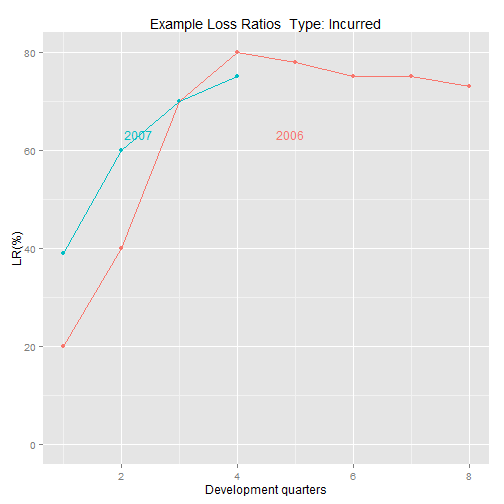 
What is plotchart Doing?
It takes a dataframe and creates a bunch of charts
| df |
The dataframe (not a data.table!) |
| fac |
Factor to split charts |
| vals |
The y-axis value |
| x |
The x-axis value |
| yl |
Label for y-axis |
| leg |
Further split charts into lines |
| HeadTitle |
Title stub |
... |
Of course, there are others |
plotchart help file!
Switch It Up
plotchart was built to make it easy to make a lot of charts and to be able to quickly change how the data is laid out without having to copy chunks of code or re-formatting. For example, it is very easy to change the x- and y-axes.
plotchart(
simple, fac = "YOA", vals = "Loss_Ratio",
x = "dev", yl = "LR(%)", leg = "Type",
HeadTitle = "Example Loss Ratios"
)


More Complicated Example
Let's try a more involved dataset of individual claims.
load("./data/PreparedData.RData")
head(claims.agg)
## YOA dev Type valsum valnum
## 1 2003 13 IncurredUSD 15902522 201
## 2 2003 13 MostlikelyUSD 15902522 201
## 3 2003 13 BlendUSD 15902522 201
## 4 2003 13 PessimisticUSD 15902522 201
## 5 2003 14 IncurredUSD 19150307 204
## 6 2003 14 MostlikelyUSD 19150307 204
str(claims.agg)
## 'data.frame': 780 obs. of 5 variables:
## $ YOA : int 2003 2003 2003 2003 2003 2003 2003 2003 2003 2003 ...
## $ dev : num 13 13 13 13 14 14 14 14 15 15 ...
## $ Type : Factor w/ 4 levels "IncurredUSD",..: 1 2 3 4 1 2 3 4 1 2 ...
## $ valsum: num 15902522 15902522 15902522 15902522 19150307 ...
## $ valnum: int 201 201 201 201 204 204 204 204 206 206 ...
levels(claims.agg$Type)
## [1] "IncurredUSD" "MostlikelyUSD" "BlendUSD" "PessimisticUSD"
YOAs for each Measure
plotchart(
claims.agg, fac = "Type", vals = "valsum",
x = "dev", yl = "Cost", leg = "YOA",
HeadTitle = "Claim Development"
)
 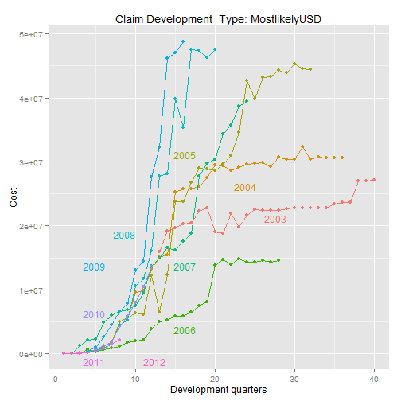 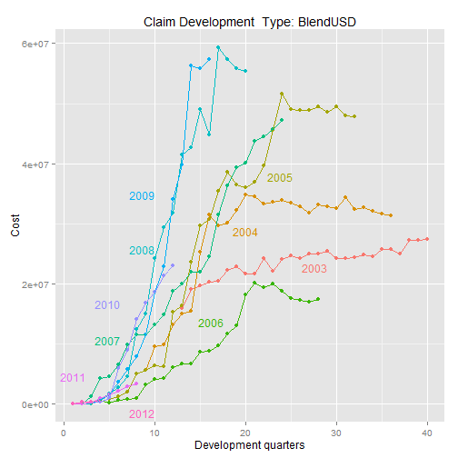
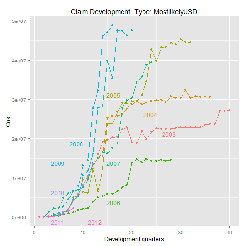 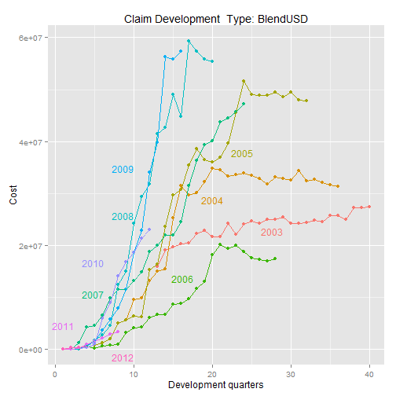 
YOAs for each Measure: usedirectlabel = FALSE
The labelling looks too busy as there are too many lines, so use of standard key is preferred
plotchart(
claims.agg, fac = "Type", vals = "valsum",
x = "dev", yl = "Cost", leg = "YOA",
HeadTitle = "Claim Development",
usedirectlabel = FALSE
)
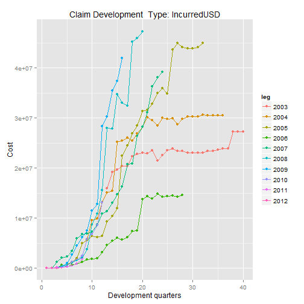 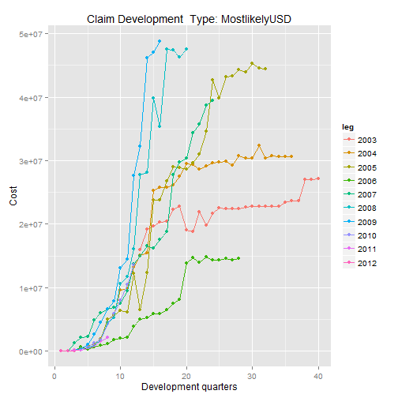  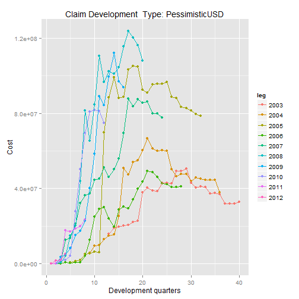
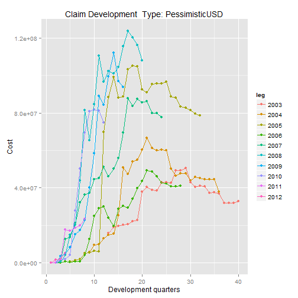
Output to PDF
If we want to send these charts out we can simply specify pdf output. (We plan to offer HTML/PNG indexed and individual output in the future.)
pdfOn <- TRUE
if(pdfOn == TRUE) pdf(file = "Example1.pdf")
plotchart(
claims.agg, fac = "YOA", vals = "valsum",
x = "dev", yl = "Cost", leg = "Type",
HeadTitle = "Claim Development"
)
if(pdfOn == TRUE) dev.off()
## pdf
## 2
Frequency Graphs
We can also look at claim numbers - and if we had premium or an exposure measure the numbers could be turned into a frequency measure.
It doesn't make any sense to show numbers for all measures as these will be identical, so run without factor.
Frequency Graphs (cont'd)
plotchart(
claims.agg, fac = "", vals = "valnum",
x = "dev", yl = "Number", leg = "YOA",
HeadTitle = "Claim Development",
usedirectlabel = FALSE
)
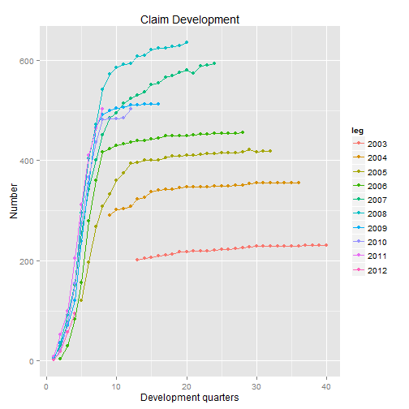
Moving Average Charts
Another function like plotchart is MAChart. The following examples show duration to close and its change over time.
head(DTC)
## ClosedYYMM num mn v totdays
## 1: 200601 0 0 2006-01-01 0
## 2: 200602 0 0 2006-02-01 0
## 3: 200603 0 0 2006-03-01 0
## 4: 200604 0 0 2006-04-01 0
## 5: 200605 0 0 2006-05-01 0
## 6: 200606 0 0 2006-06-01 0
head(DTC.IND)
## ClosedYYMM ClaimSeverityInd num mn v totdays
## 1: 200601 1 0 0 2006-01-01 0
## 2: 200601 2 0 0 2006-01-01 0
## 3: 200601 3 0 0 2006-01-01 0
## 4: 200601 4 0 0 2006-01-01 0
## 5: 200602 1 0 0 2006-02-01 0
## 6: 200602 2 0 0 2006-02-01 0
Moving Average Charts (Cont'd)
MAChart(
df = as.data.frame(DTC), ywt = 2, ycol = 3, xcol = 4,
main = "Duration to close (12m moving average)",
xlab = "Closed Year+Month",
ylab = "Average Duration (days)",
xstep = 3, xRotate = T
)
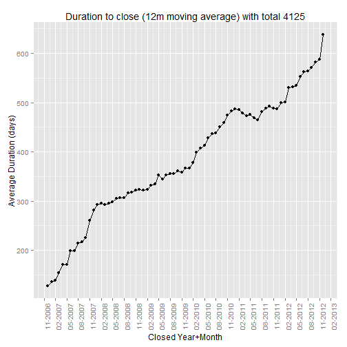
Moving Average Charts (cont'd)
MAChart(
df = as.data.frame(DTC.IND), ywt = 3, ycol = 4, xcol = 5,
main = "Duration to close (12m MA) by SeverityIndicator",
xlab = "Closed Year+Month",
ylab = "Average Duration (days)",
xstep = 3,
leg="ClaimSeverityInd",
xRotate = T
)
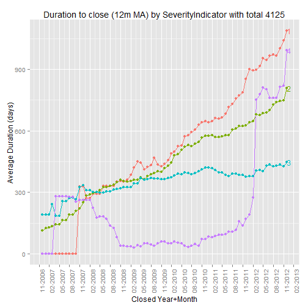
The End
The data and all this code will be made available to conference participants.
Thanks!
- Simon Brickman
- Adam L. Rich

 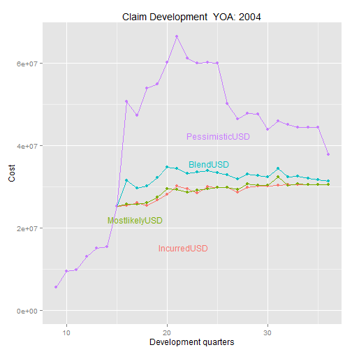 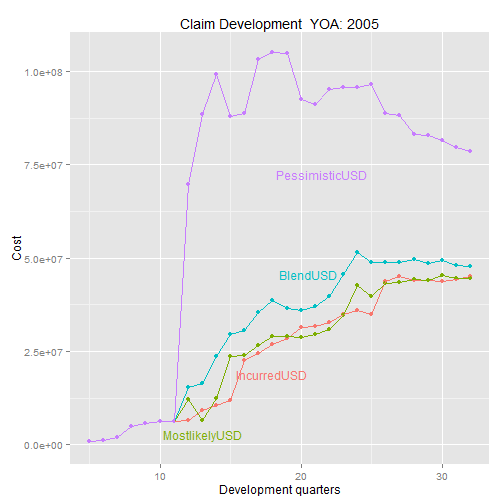
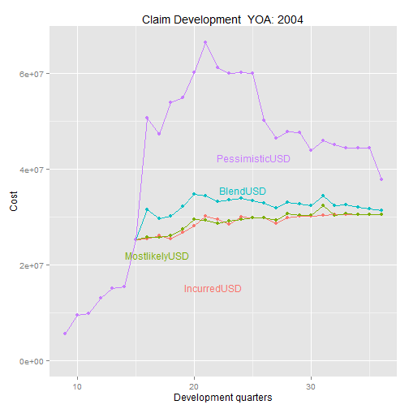 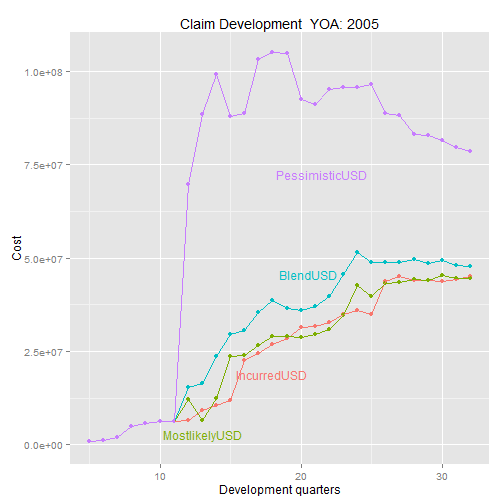 


 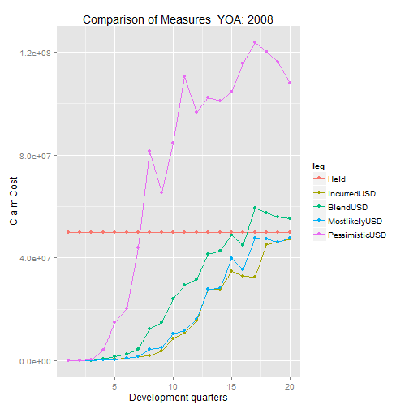
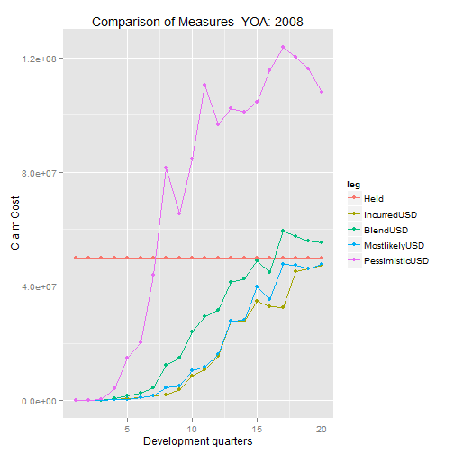